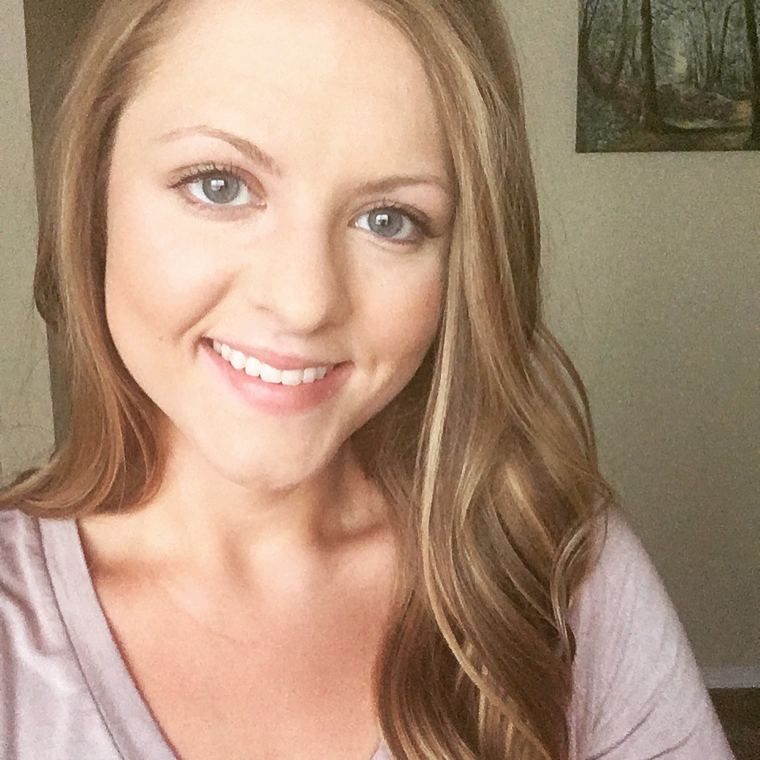

Erica McConnaughey

About Me
Welcome to my portfolio!
I am currently learning web development via online courses and very
soon I'll begin a bootcamp. I'm excited to continue learning and
growing. In my former career, I was a teacher. I realized I was ready
for something different, so I quit my job and did some soul searching.
That led me to web development!
I love solving problems, finding efficient
processes, designing the details, and learning new concepts. I also love
the growing field, flexible schedules, and remote job opportunities
specific to web development.
Keep reading for more details about my background.
Intro to Programming -- Fall 2019 -- Epicodus
Master's in Gifted Education -- 2016 -- Drury University, Springfield, MO
Bachelor's in Elementary Education -- 2014 -- Drury University, Springfield, MO
Gifted Educator -- 2014-2019 -- Phelps Center for Gifted Education
Substitute Teacher -- 2013-2014 -- Springfield Public Schools
Circulation Assistant -- 2011-2013 -- Olin Library, Drury University
I'm married to Grant McConnaughey.
We moved to Wisconsin from Missouri in 2019.
We have a terrier mix named Mia. She is cute, but ornery.
My favorite things include: fiction books, dark chocolate, yoga,
baking, personality quizzes, traveling, and psychology.